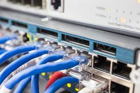
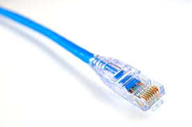
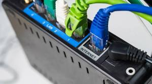

Cableado de Red Ethernet
Samuel Marin Calvo

Samuel Marin Calvo

El cableado de red Ethernet es la base de la mayoria de las redes de computadores del mundo. Desde una casa hasta un centro de datos, los cables ethernet son los encargados de transmitir la informacion de un dispositivo a otro de forma rapida y confiable.
Ethernet es un conjunto de tecnologias y estandares que permiten la comunicacion entre dispositivos dentro de una red de area local, conocida como LAN (Local Area Network). Fue desarrollado en los años 70 por Xerox Corporation y con el tiempo se convirtio en el estandar mas usado del mundo para redes cableadas.
El nombre "Ethernet" viene de la palabra "eter", que antiguamente se creia que era el medio por donde viajaba la luz en el espacio. Hoy en dia, Ethernet viaja por cables de par trenzado y utiliza el estandar IEEE 802.3 para regular su funcionamiento.
El cableado Ethernet es importante porque ofrece una conexion estable, rapida y segura. A diferencia del WiFi, no depende de senales inalambricas que pueden ser interrumpidas por paredes, interferencias o distancia. Por eso se usa en oficinas, hospitales, universidades, centros de datos y cualquier lugar donde la velocidad y la estabilidad son prioritarias.
Ademas, Ethernet permite conectar cientos de dispositivos al mismo tiempo usando switches y routers, formando redes grandes y eficientes. Sin el cableado estructurado, internet moderno no funcionaria de la forma en que lo conocemos hoy.
Los cables ethernet se clasifican por categorias segun su velocidad y frecuencia:
| Categoria | Velocidad maxima | Frecuencia | Uso comun |
|---|---|---|---|
| Cat 5 | 100 Mbps | 100 MHz | Redes antiguas |
| Cat 5e | 1 Gbps | 100 MHz | Hogares y oficinas |
| Cat 6 | 10 Gbps | 250 MHz | Empresas |
| Cat 6A | 10 Gbps | 500 MHz | Centros de datos |
| Cat 7 | 10 Gbps | 600 MHz | Alta interferencia |

En una empresa tipica, todos los computadores de las oficinas estan conectados mediante cable Cat 5e o Cat 6 a switches que luego se conectan a un router central. Esto permite que todos compartan internet y recursos como impresoras o servidores internos.
En los hospitales se usa cableado Cat 6A porque necesitan transmitir imagenes medicas de alta resolucion (como rayos X o resonancias) de forma rapida y sin perdida de datos. Una falla en la red puede afectar directamente a los pacientes.
| Caracteristica | Ethernet (cable) | WiFi (inalambrico) |
|---|---|---|
| Velocidad | Hasta 10 Gbps | Hasta 9.6 Gbps (WiFi 6) |
| Estabilidad | Muy alta | Media (depende de obstaculos) |
| Seguridad | Alta | Media |
| Movilidad | Ninguna | Total |
| Costo instalacion | Medio | Bajo |

El cableado Ethernet sigue siendo la tecnologia mas confiable para redes locales, especialmente en entornos donde la estabilidad y la velocidad son indispensables.
Elegir la categoria correcta del cable es fundamental. Para uso domestico basta con Cat 5e, pero en entornos profesionales o centros de datos se recomienda Cat 6 o superior.
El estandar T568B es el mas usado a nivel mundial para el ponchado de cables, por lo que es importante que cualquier tecnico de redes lo conozca y aplique correctamente.
A pesar del crecimiento del WiFi, Ethernet no va a desaparecer. En la industria actual, los centros de datos, hospitales, bancos y universidades dependen totalmente del cableado estructurado para funcionar.
Comprender el cableado de red es una habilidad basica pero muy valiosa para cualquier persona que quiera trabajar en el area de tecnologia, redes o sistemas.